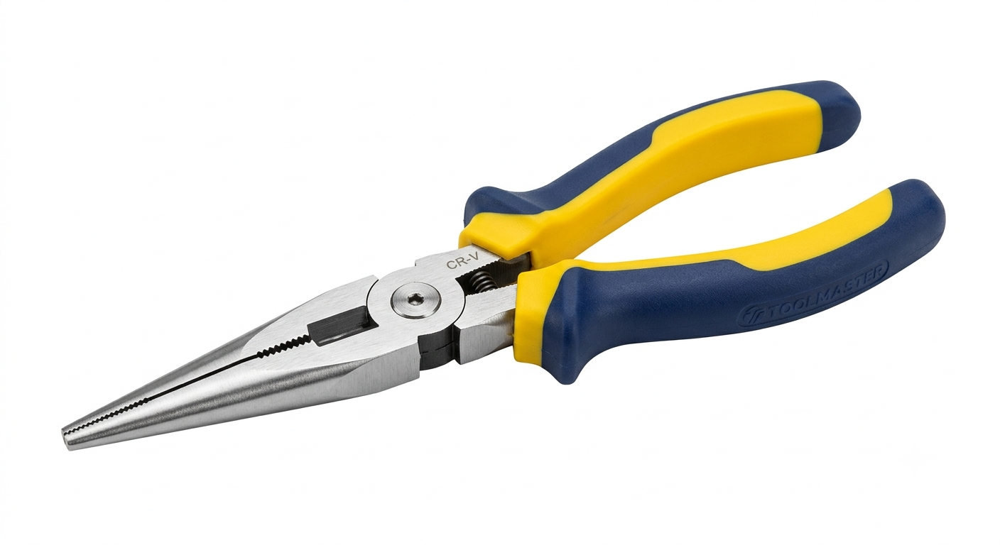
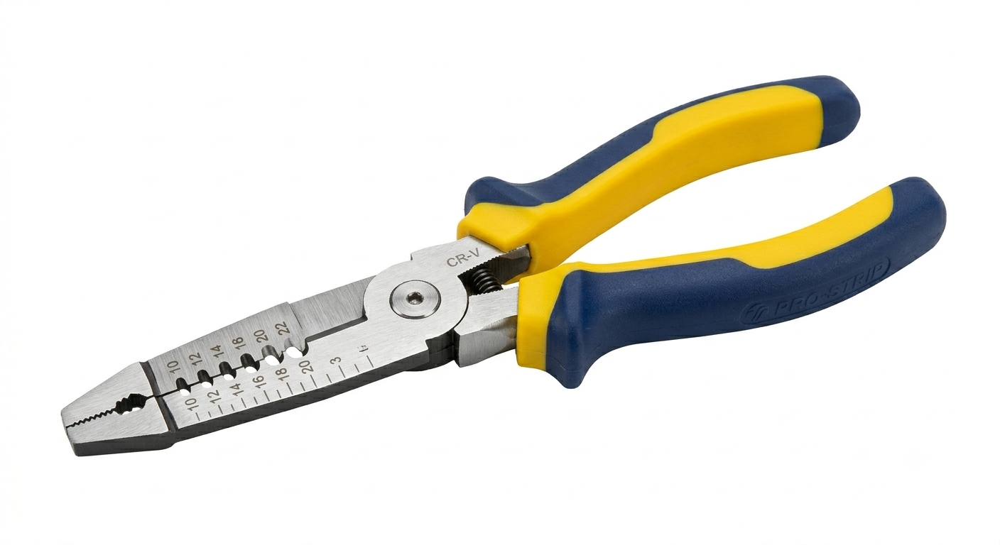
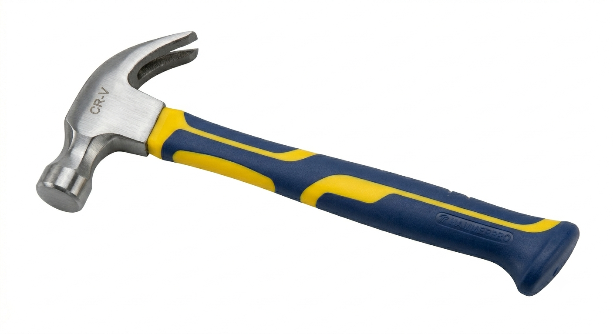

| 照片 | 名稱 | 介紹 |
|---|---|---|
 |
Needle-nose pliers | Needle-nose pliers, also known as long-nose pliers and snipe-nose pliers, are both cutting and holding pliers used by artisans, jewellery designers, electricians, network engineers and other tradesmen to bend, re-position and snip wire. Their namesake long nose gives excellent control while the cutting edge near the pliers' joint provides "one-tool" convenience. Because of their long shape they are useful for reaching into small areas where cables or other materials have become stuck or unreachable with fingers or other means. |
 |
Wire pliers | This wire stripper is designed to take care of the most common problems that an electrician might encounter. Whether you need to strip wires or crimp them, this tool will help you do the job quickly and reliably. With six integrated sizes for stripping, crimping, and cutting, it can even handle multiple types of wires at once |
 |
Hammer | A hammer is a tool, most often a hand tool, consisting of a weighted "head" fixed to a long handle that is swung to deliver an impact to a small area of an object. This can be, for example, to drive nails into wood, to shape metal (as with a forge), or to crush rock.[1][2] Hammers are used for a wide range of driving, shaping, breaking and non-destructive striking applications. Traditional disciplines include carpentry, blacksmithing, warfare, and percussive musicianship (as with a gong). |